Snakes of Belize
65 living snake species are recorded in Belize in SnakeList: 10 venomous and 55 non-venomous, from 5 families.
- 65living species
- 5families
Danger to people · tap a number to show only those snakes
- 0mildly venomous
- 0giant constrictors
Harmful = dangerously venomous + giant constrictors. HarmlessLow risk = not venomous and not a giant constrictor. Mildly venomous snakes have no serious bites to people documented. Any snake can bite.
These totals count the unique living snake species SnakeList records in Belize. A species counts if it is recorded anywhere in the country, so not every snake lives in every part of it.
In SnakeList’s checklist filters
How many of the 65 living species here each filter in the SnakeList app picks out – tap a number to show only those snakes.
Snake family5 types, 5 families
Type
Family
Habitats14 habitat groups
Habitats are estimated from where each snake is recorded and what kind of snake it is, as in SnakeList; a snake can count in several.
Characteristics10 venomous, 6 constrictors
Constrictor and Non-constrictor count only snakes whose family or genus is documented as constricting or not; the rest are not documented.
Other filters0 popular, 3 rare
- 0popular
- 0exotic
- 0invasive
- 0no photos
- 0extinct
Species
Showing 65 species
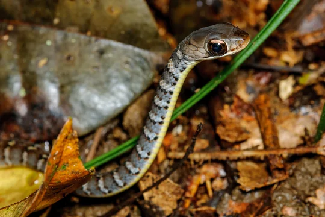
Barred Forest RacerDendrophidion vinitor Black-striped Snake (imperialis)Coniophanes imperialis
Black-striped Snake (imperialis)Coniophanes imperialis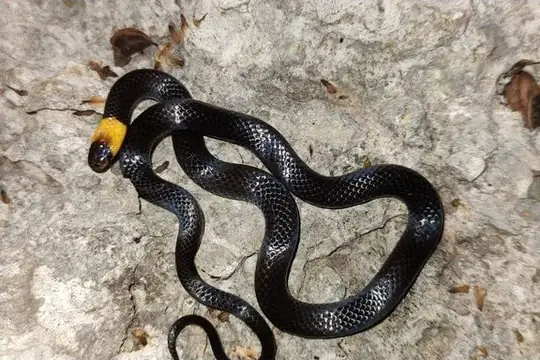
Blackbelly Centipede SnakeTantilla moesta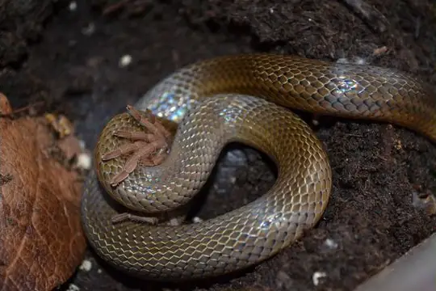
Blood SnakeStenorrhina freminvillei Blotched Hooknose SnakeFicimia publia
Blotched Hooknose SnakeFicimia publia Brown VinesnakeOxybelis aeneus
Brown VinesnakeOxybelis aeneus CantilAgkistrodon russeolus
CantilAgkistrodon russeolus Cat-eyed Snake (septentrionalis)Leptodeira septentrionalis
Cat-eyed Snake (septentrionalis)Leptodeira septentrionalis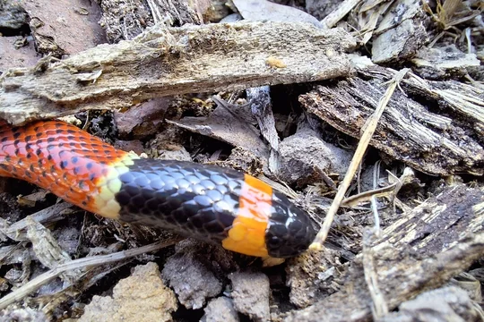
Central American Coral SnakeMicrurus nigrocinctus Central American Indigo SnakeDrymarchon melanurus
Central American Indigo SnakeDrymarchon melanurus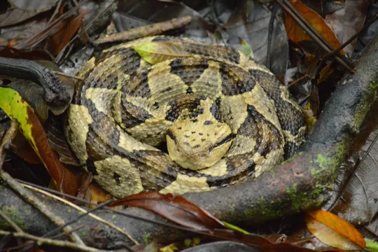
Central American Jumping Pit ViperMetlapilcoatlus mexicanus Central American Tree SnakeImantodes gemmistratus
Central American Tree SnakeImantodes gemmistratus Checkered Garter SnakeThamnophis marcianus
Checkered Garter SnakeThamnophis marcianus Chicken SnakeSpilotes pullatus
Chicken SnakeSpilotes pullatus Colombian BoaBoa imperator
Colombian BoaBoa imperator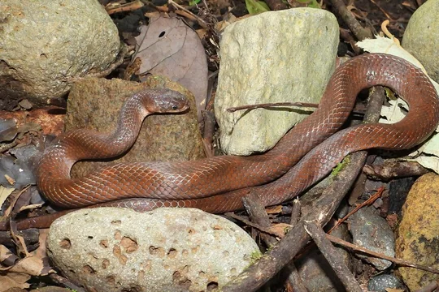
Degenhardt's Scorpion-eating SnakeStenorrhina degenhardtii Faded Black-striped SnakeConiophanes schmidti
Faded Black-striped SnakeConiophanes schmidti False Fer-de-lanceXenodon rabdocephalus
False Fer-de-lanceXenodon rabdocephalus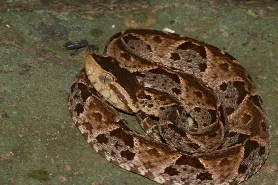
Fer-de-lanceBothrops asper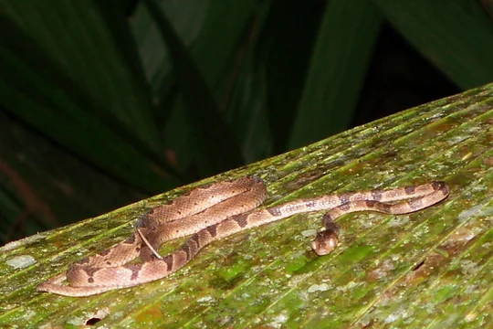
Fiddle-string SnakeImantodes cenchoa Green Highland RacerDrymobius chloroticus
Green Highland RacerDrymobius chloroticus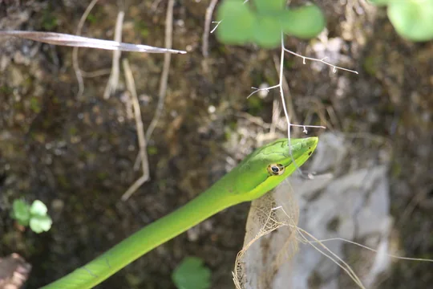
Green Vine Snake (fulgidus)Oxybelis fulgidus Guatemala Neckband SnakeScaphiodontophis annulatus
Guatemala Neckband SnakeScaphiodontophis annulatus Gulf Coast Vine SnakeOxybelis potosiensis
Gulf Coast Vine SnakeOxybelis potosiensis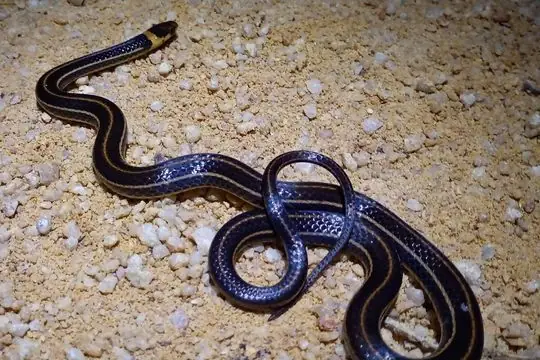
Henderson's Peten Centipede SnakeTantilla hendersoni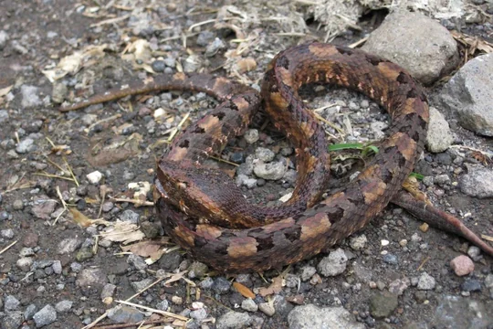
Hognosed Pit ViperPorthidium nasutum Honduran Milk SnakeLampropeltis abnorma
Honduran Milk SnakeLampropeltis abnorma Linton's Dwarf Short-tail SnakeTantillita lintoni
Linton's Dwarf Short-tail SnakeTantillita lintoni Mayan Coral SnakeMicrurus hippocrepis
Mayan Coral SnakeMicrurus hippocrepis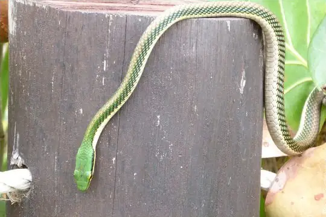
Mexican Parrot SnakeLeptophis mexicanus Mexican Snake EaterClelia scytalina
Mexican Snake EaterClelia scytalina Middle American Burrowing Snake (quadrivirgatum)Adelphicos quadrivirgatum
Middle American Burrowing Snake (quadrivirgatum)Adelphicos quadrivirgatum Middle American Burrowing Snake (visoninum)Adelphicos visoninum
Middle American Burrowing Snake (visoninum)Adelphicos visoninum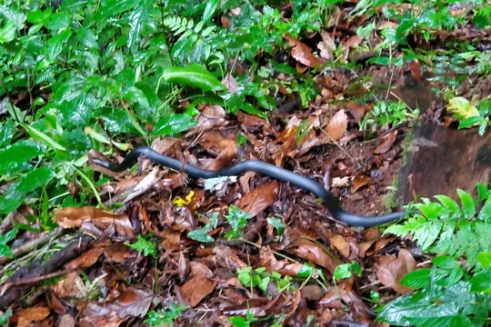
Mussurana (clelia)Clelia clelia Neotropical Whip SnakeMasticophis mentovarius
Neotropical Whip SnakeMasticophis mentovarius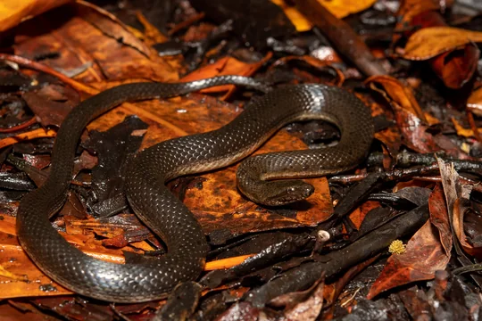
Orangebelly Swamp SnakeTretanorhinus nigroluteus Pacific Longtail SnakeEnulius flavitorques
Pacific Longtail SnakeEnulius flavitorques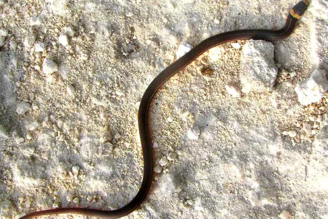
Peten Centipede Snake (cuniculator)Tantilla cuniculator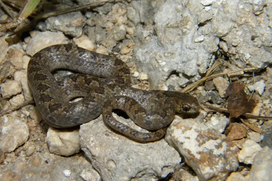
Pigmy Snail SuckerSibon sanniolus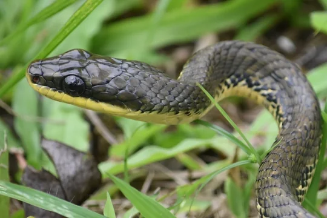
Puffing SnakePhrynonax poecilonotus RacerColuber constrictor
RacerColuber constrictor Rainforest Cat-eyed SnakeLeptodeira frenata
Rainforest Cat-eyed SnakeLeptodeira frenata Red-headed Forest RacerDendrophidion rufiterminorum
Red-headed Forest RacerDendrophidion rufiterminorum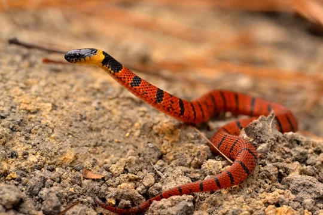
Redback Coffee SnakeNinia sebae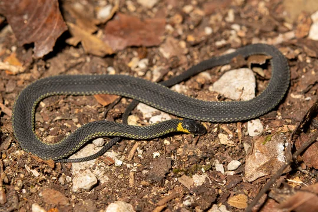
Ringneck Coffee SnakeNinia diademata Road GuarderConophis lineatus
Road GuarderConophis lineatus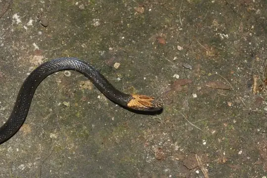
Rusty-headed SnakeAmastridium sapperi Rustyhead SnakeAmastridium veliferum
Rustyhead SnakeAmastridium veliferum Salmon-bellied RacerMastigodryas melanolomus
Salmon-bellied RacerMastigodryas melanolomus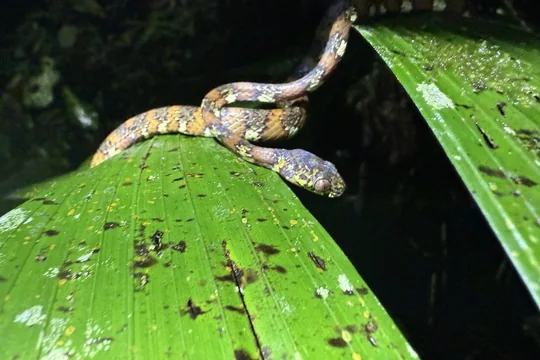
Slender Snail SuckerSibon dimidiatus Snail-eating Thirst SnakeDipsas brevifacies
Snail-eating Thirst SnakeDipsas brevifacies Speckled RacerDrymobius margaritiferus
Speckled RacerDrymobius margaritiferus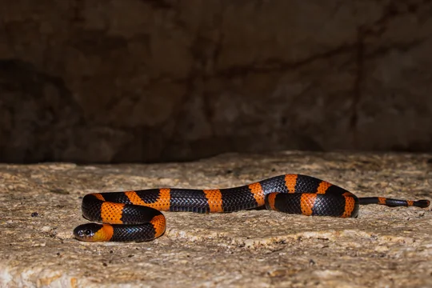
Terrestrial Snail SuckerTropidodipsas sartorii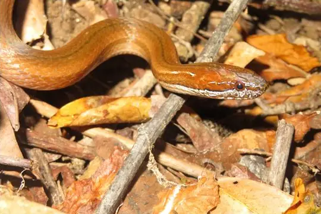
Two-spotted SnakeConiophanes bipunctatus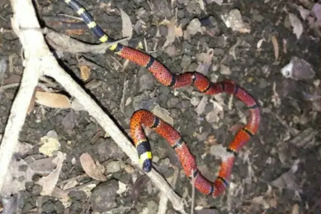
Variable Coral SnakeMicrurus diastema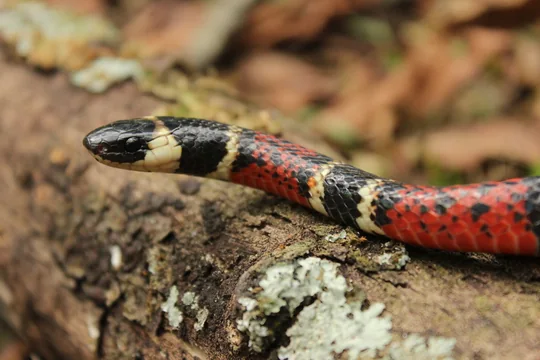
Variegated False Coral SnakePliocercus elapoides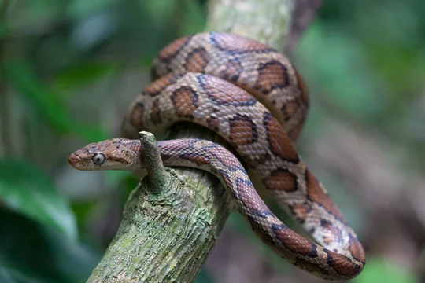
Yellow-red Rat SnakePseudelaphe flavirufa Yellowbelly SnakeConiophanes fissidens
Yellowbelly SnakeConiophanes fissidens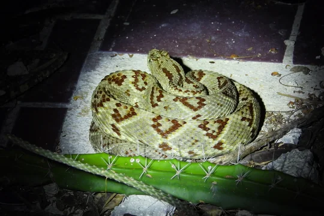
Yucatan Neotropical RattlesnakeCrotalus tzabcan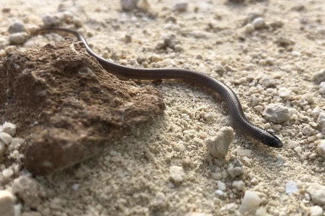
Yucatecan Dwarf Short-tail SnakeTantillita canula Yucatecan Worm SnakeAmerotyphlops microstomus
Yucatecan Worm SnakeAmerotyphlops microstomus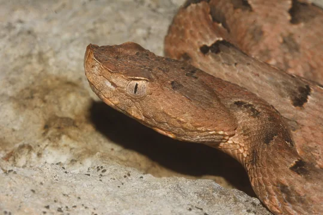
Yucatán Hognose ViperPorthidium yucatanicum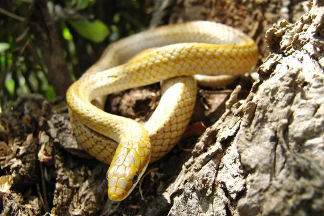
Yucatán White-lipped SnakeSymphimus mayae Leptodeira polysticta
Leptodeira polysticta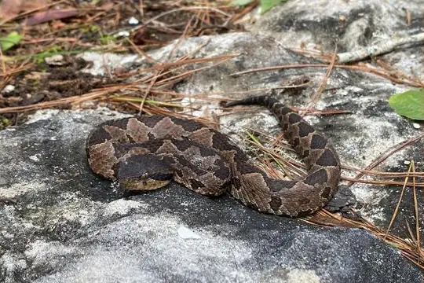
Metlapilcoatlus borealis
No snakes in Belize match.
Belize’s snakes in numbers
- Families: Colubridae 53, Viperidae 7, Elapidae 3, Boidae 1, Typhlopidae 1.
- 1 is recorded in no other country or territory in SnakeList: Henderson's Peten Centipede Snake.
How precisely they are recorded
Of the 65 living species recorded in Belize, 41 are recorded by district in SnakeList’s data; 24 are recorded only for Belize as a whole, so the district pages list them as possible rather than recorded. SnakeList records each species by district, not by exact spot, so a species listed for a district may live in only part of it.
Districts
The districts where SnakeList records snakes, with how many living species are recorded in each. Each page has its species, venomous snakes, families, the species found only there, its cities and neighbours.
- Belize 13 species
- Cayo 34 species
- Corozal 21 species
- Orange Walk 21 species
- Stann Creek 17 species
- Toledo 16 species
No place matches that.
Cities
Its biggest cities, biggest first. SnakeList records snakes by district, not by city, so each city page shows the species recorded in its district and, separately, those only possible there - not species confirmed in the city.
- Belmopan Cayo
No place matches that.